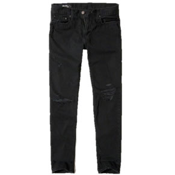
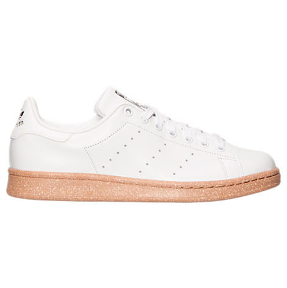

Black Distressed Denim: Personally, I've always had a fondness for distressed jeans. To me, they make any streetwear outfit look fantastic, but they're definitely not for everyone. Note: if you decide to wear these remember to lotion up those knees, and winter can be especially brutal so keep that in mind.

Beige T-Shirt : Honestly, if you're a lightskin male, you owe it to your complexion to always wear beige. It will never not look good.

Stan Smith Gum Sole: Great shoe that literally lasts forever. If you can somehow find this colorway I highly reccommend it, you'll receive nothing but compliments. Also a great shoe to skate in, and surprisingly as versatile as the classic green and white colorway.